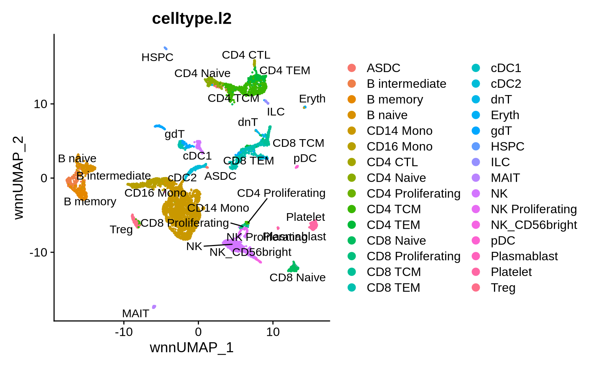
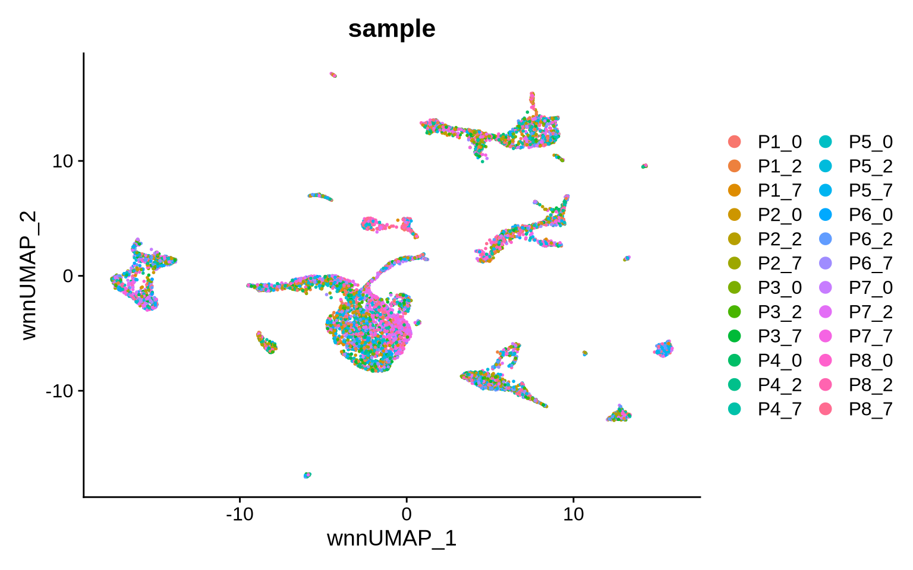
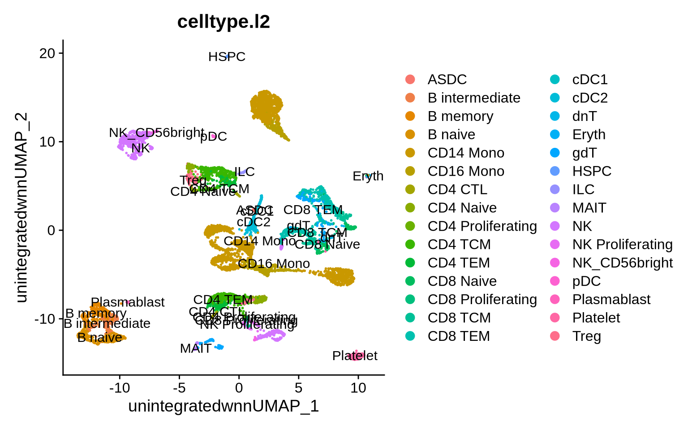
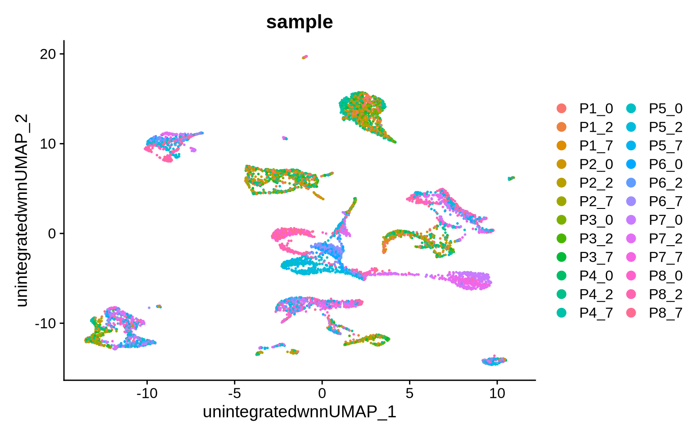
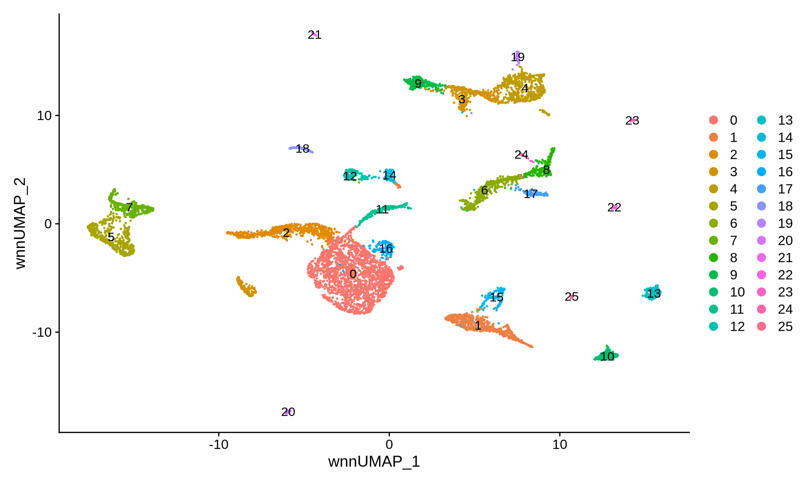
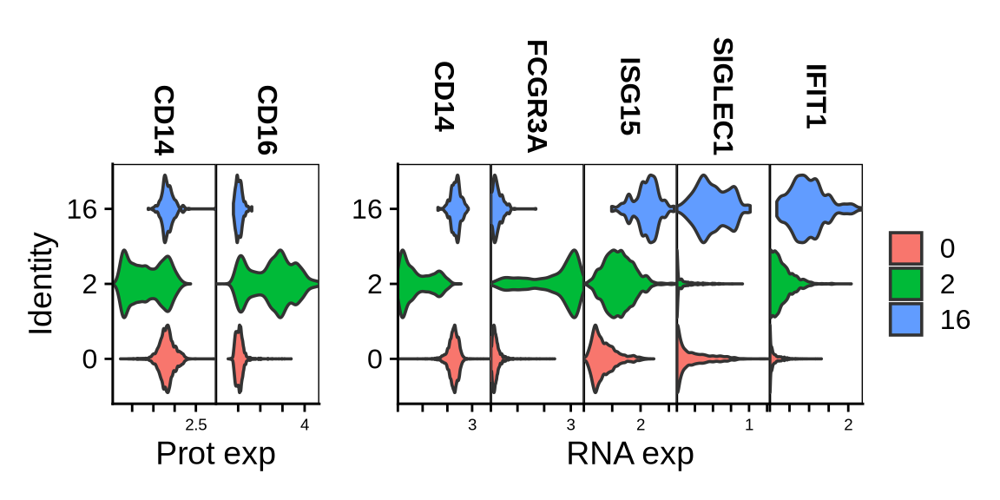
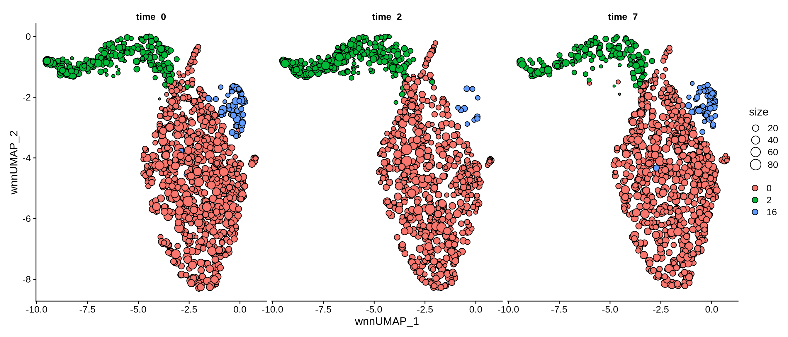

In this tutorial we will construct a multimodal metacell atlas of PBMC CITE-seq data using a semi-supervised workflow composed of SuperCell2.0 and STACAS.
The single-cell atlas was originally constructed and annotated in Hao et al., 2021.
Installing SuperCell2.0 package from github if needed.
if (!requireNamespace("remotes")) install.packages("remotes")
remotes::install_github("GfellerLab/SuperCell@supercell-2.0")We will use STACAS for batch correction of the RNA and ADT modalities.
if (!requireNamespace("STACAS")) {
remotes::install_github("carmonalab/STACAS")
}
library(SuperCell)
library(Seurat)
library(dplyr)
library(ggplot2)
library(patchwork)
library(STACAS)
The two following chunks provide example command lines to download
the atlas count matrices as well as atlas single-cell metadata from GEO
(GSE164378) and place them locally in
"./PBMC_CITE_seq_atlas/input/GSM5008737_RNA_3P/" and
"PBMC_CITE_seq_atlas/input/GSM5008738_ADT_3P/". The
tutorial will use this path structure.
First, create input directory.
mkdir -p PBMC_CITE_seq_atlas/input &&
cd PBMC_CITE_seq_atlas/input &&Then download data.
cd PBMC_CITE_seq_atlas/input &&
wget "https://www.ncbi.nlm.nih.gov/geo/download/?acc=GSE164378&format=file&file=GSE164378%5Fsc%2Emeta%2Edata%5F3P%2Ecsv%2Egz" -O GSE164378_sc.meta.data_3P.csv.gz &&
gunzip GSE164378_sc.meta.data_3P.csv.gz &&
wget "https://www.ncbi.nlm.nih.gov/geo/download/?acc=GSE164378&format=file" -O GSE164378_RAW.tar &&
mkdir -p GSE164378_RAW && tar -C GSE164378_RAW -xvf GSE164378_RAW.tar &&
cd GSE164378_RAW &&
mkdir -p GSM5008737_RNA_3P && mv GSM5008737_RNA_3P-* GSM5008737_RNA_3P/ &&
mkdir -p GSM5008738_ADT_3P && mv GSM5008738_ADT_3P-* GSM5008738_ADT_3P/ &&
cd GSM5008737_RNA_3P/ &&
for file in GSM5008737_RNA_3P-*; do
mv "$file" "${file#GSM5008737_RNA_3P-}"
done &&
cd ../GSM5008738_ADT_3P/ &&
for file in GSM5008738_ADT_3P-*; do
mv "$file" "${file#GSM5008738_ADT_3P-}"
done In the end, some cleaning.
cd PBMC_CITE_seq_atlas/input &&
rm -f GSE164378_RAW/*.gz &&
mv GSE164378_RAW/* . &&
rm -r GSE164378_RAWadt.comp <- 1:50
rna.comp <- 1:40
graining.level = 20This atlas contain more than 160,000 cells profiled with CITE-seq (RNA + surface proteins) using more than 200 antibody derived tags (ADTs).
rna.counts <- Read10X("PBMC_CITE_seq_atlas/input/GSM5008737_RNA_3P/")
meta <- read.csv("PBMC_CITE_seq_atlas/input/GSE164378_sc.meta.data_3P.csv",row.names = 1)
pbmc <- CreateSeuratObject(counts = rna.counts,meta.data = meta)
remove(rna.counts)
remove(meta)
gc()
#> used (Mb) gc trigger (Mb) max used (Mb)
#> Ncells 4541970 242.6 7175221 383.2 7175221 383.2
#> Vcells 542829701 4141.5 1883883583 14372.9 1970221213 15031.6
adt.counts <- Read10X("PBMC_CITE_seq_atlas/input/GSM5008738_ADT_3P/")
pbmc[["ADT"]] <- CreateAssayObject(counts = adt.counts)
remove(adt.counts)
gc()
#> used (Mb) gc trigger (Mb) max used (Mb)
#> Ncells 4544649 242.8 7175221 383.2 7175221 383.2
#> Vcells 593720713 4529.8 1883883583 14372.9 1970221213 15031.6
pbmc
#> An object of class Seurat
#> 33766 features across 161764 samples within 2 assays
#> Active assay: RNA (33538 features, 0 variable features)
#> 1 layer present: counts
#> 1 other assay present: ADTThis seurat single-cell object is annotated on different levels.
head(FetchData(pbmc,c("donor","time","celltype.l1","celltype.l2")))
#> donor time celltype.l1 celltype.l2
#> L1_AAACCCAAGAAACTCA P2 7 Mono CD14 Mono
#> L1_AAACCCAAGACATACA P1 7 CD4 T CD4 TCM
#> L1_AAACCCACAACTGGTT P4 2 CD8 T CD8 Naive
#> L1_AAACCCACACGTACTA P3 7 NK NK
#> L1_AAACCCACAGCATACT P4 7 CD8 T CD8 Naive
#> L1_AAACCCACATCAGTCA P3 2 CD8 T CD8 TEMThis atlas is composed of 8 donors profiled at 3 time points during the vaccine trial for a total of 24 samples.
table(pbmc$donor,pbmc$time)
#>
#> 0 2 7
#> P1 6443 5917 5775
#> P2 5978 5714 5513
#> P3 4698 5002 4960
#> P4 5307 5793 5990
#> P5 7020 6933 7858
#> P6 6093 7583 7066
#> P7 8909 8200 8762
#> P8 8916 9203 8131We can add the "sample" metadata by concatenating donor
and time.
pbmc$sample <- paste0(pbmc$donor,"_",pbmc$time)We also add a prefix to the "time" metadata (in order to
enable its aggregation at the metacell level with the
SCimplify_for_Seurat function).
pbmc$time <- paste0("time_",pbmc$time)We can remove annotated doublets from the atlas.
pbmc <- pbmc[,pbmc$celltype.l2 != "Doublet"]
# pbmc <- pbmc[,pbmc$celltype.l2 != "Doublet" & pbmc$donor %in% c("P1","P2","P3")]
pbmc
#> An object of class Seurat
#> 33766 features across 161159 samples within 2 assays
#> Active assay: RNA (33538 features, 0 variable features)
#> 1 layer present: counts
#> 1 other assay present: ADTAs in SuperCell2.0 manuscript, we add an intermediate level of annotation that we will used for the semi-supervised metacell workflow.
pbmc$celltype.l1.5 <- pbmc$celltype.l1
pbmc$celltype.l1.5[pbmc$celltype.l1 == "other"] <- pbmc$celltype.l2[pbmc$celltype.l1 == "other"]
pbmc$celltype.l1.5[pbmc$celltype.l1 =="other T"] <- pbmc$celltype.l2[pbmc$celltype.l1 == "other T"]We will process each single-cell sample separately for identifying metacells.
pbmc.smp.list <- SplitObject(pbmc,split.by = "sample")
remove(pbmc)
gc()
#> used (Mb) gc trigger (Mb) max used (Mb)
#> Ncells 4562085 243.7 7175222 383.2 7175222 383.2
#> Vcells 642804342 4904.3 1883883583 14372.9 1970221213 15031.6We preprocess the single-cell modalities using standard Seurat
workflows. Then metacells are identified using the semi-supervised
multimodal SuperCell2.0 workflow with "celltype.l1.5" as
input cell labels. This step can take around 15 min but could be further
accelerated using parallelisation.
options(future.globals.maxSize = 1.5 * 1024 ^ 3)
t0 <- Sys.time()
pbmc.smp.list <- lapply(pbmc.smp.list, function(x) {
#single-cell RNA preprocessing
DefaultAssay(x) <- "RNA"
x <- NormalizeData(x,verbose = FALSE) %>%
FindVariableFeatures(verbose = FALSE) %>%
ScaleData(verbose = FALSE)%>%
RunPCA(verbose = FALSE)
#single-cell ADT preprocessing
DefaultAssay(x) <- "ADT"
VariableFeatures(x) <- rownames(x)
x <- NormalizeData(x, normalization.method = "CLR", margin = 2,verbose = FALSE) %>%
ScaleData(verbose = FALSE) %>%
RunPCA(reduction.name = "apca",verbose = FALSE)
#metacell identificaiton with the semi-supervised multimodal SuperCell2.0 workflow
x <- SCimplify_for_Seurat(
seurat = x,
assay = c("RNA", "ADT"),
reduction = list("pca", "apca"),
dims = list(rna.comp, adt.comp),
label = "celltype.l1.5",
gamma = graining.level
)
return(x)
})
tf <- Sys.time()
tf - t0
#> Time difference of 13.22511 minspbmc.smp.list now contains seurat metacell objects that
we can integrate using STACAS.
Here we will correct batch effect in each modality before performing a multimodal integration at the metacell level.
We define the samples at day 0 of the vaccine trial as the reference for integration of RNA and ADT modalities.
reference <- which(endsWith(names(pbmc.smp.list),suffix = "_0"))
print(reference)
#> [1] 8 9 11 12 14 16 18 23First we preprocess the metacell RNA data. We rename the metacells by adding a sample name prefix to avoid duplicated names at the integration step.
Accordingly, we also have to rename the metacell membership vector of each metacell object.
pbmc.smp.list <- lapply(X = pbmc.smp.list, FUN = function(x) {
x <- RenameCells(x,add.cell.id = unique(x$sample))
x@misc$new.membership <- paste0(unique(x$sample),"_Metacell_", x@misc$membership)
names(x@misc$new.membership) <- names(x@misc$membership)
DefaultAssay(x) <- "RNA"
x <- NormalizeData(x, verbose = FALSE) %>% FindVariableFeatures()
return(x)}
)Then we integrate the RNA modality at the metacell level using the batch correction tool STACAS.
features <- SelectIntegrationFeatures(object.list = pbmc.smp.list)
pbmc.combined <- Run.STACAS(object.list = pbmc.smp.list,
assay = rep("RNA",length(pbmc.smp.list)),
anchor.features = features,
dims = 50,
cell.labels = "celltype.l1.5",
reference = reference)
stacas_rna <- pbmc.combined[["pca"]]
First preprocessing of metacell ADT data.
pbmc.smp.list <- lapply(X = pbmc.smp.list, FUN = function(x) {
DefaultAssay(x) <- "ADT"
VariableFeatures(x) <- rownames(x[["ADT"]])
x <- NormalizeData(x, normalization.method = 'CLR', margin = 2)
return(x)
})Then integration with STACAS.
features <- rownames(pbmc.combined[["ADT"]]) # we use all ADTs
pbmc.combined <- Run.STACAS(object.list = pbmc.smp.list,
assay = rep("ADT",length(pbmc.smp.list)),
anchor.features = features,
scale.data = T,
dims = 50,
cell.labels = "celltype.l1.5",
reference = reference)
pbmc.combined[["stacas_adt"]] <- pbmc.combined[["pca"]]
pbmc.combined[["pca"]] <- NULL
pbmc.combined[["stacas_rna"]] <- stacas_rna
Finally we add a membership vector to the combined object.
pbmc.combined@misc$membership <- unlist(lapply(pbmc.smp.list,FUN = function(x) {x@misc$new.membership}))
pbmc.combined <- FindMultiModalNeighbors(pbmc.combined,
reduction.list = list("stacas_rna","stacas_adt"),
dims.list = list(rna.comp,adt.comp),prune.SNN = 0,
verbose = F)
pbmc.combined <- RunUMAP(pbmc.combined,
nn.name = "weighted.nn",
reduction.name = "wnn.umap",
reduction.key = "wnnUMAP_",return.model = T)
DimPlot(pbmc.combined,reduction = "wnn.umap",label = T,repel = T,group.by = c("celltype.l2"),shuffle = T)
DimPlot(pbmc.combined,reduction = "wnn.umap",group.by = c("sample"),shuffle = T)
This final embedding is slightly different from the one in our manuscript were we used SCTransform workflow to preprocess single-cell RNA modality (as in the original study) while here we use standard log normalization for both single-cell and metacell RNA processing in order to speed up the analysis. Overall the results are consistent.
Without batch correction a batch effect is clearly present at the metacell level.
DefaultAssay(pbmc.combined) <- "RNA"
pbmc.combined <- ScaleData(pbmc.combined) %>% RunPCA()
DefaultAssay(pbmc.combined) <- "ADT"
VariableFeatures(pbmc.combined) <- rownames(pbmc.combined[["ADT"]])
pbmc.combined <- ScaleData(pbmc.combined) %>% RunPCA(reduction.name = "apca")
pbmc.combined <- FindMultiModalNeighbors(pbmc.combined,
weighted.nn.name = "unintegrated.weighted.nn",
knn.graph.name = "unintegrated.wknn",
snn.graph.name = "unintegrated.wsnn",
reduction.list = list("pca","apca"),
dims.list = list(rna.comp,adt.comp),
verbose = F)
pbmc.combined <- RunUMAP(pbmc.combined,
nn.name = "unintegrated.weighted.nn",
reduction.name = "unintegrated.wnn.umap",
reduction.key = "unintegrated.wnnUMAP_"
)
DimPlot(pbmc.combined,reduction = "unintegrated.wnn.umap",label = T,group.by = c("celltype.l2"),shuffle = T)
DimPlot(pbmc.combined,reduction = "unintegrated.wnn.umap",group.by = c("sample"),shuffle = T)
Let’s perform an unsupervised clustering of our metacells based on the (batch corrected) multimodal metacell network we just obtained.
DefaultAssay(pbmc.combined) <- "RNA"
pbmc.combined <- FindClusters(pbmc.combined,graph.name = "wsnn",resolution = 0.5,algorithm = 3)
#> Modularity Optimizer version 1.3.0 by Ludo Waltman and Nees Jan van Eck
#>
#> Number of nodes: 8046
#> Number of edges: 570006
#>
#> Running smart local moving algorithm...
#> Maximum modularity in 10 random starts: 0.9373
#> Number of communities: 26
#> Elapsed time: 4 seconds
DimPlot(pbmc.combined, reduction = "wnn.umap",label = T)
pbmc.combined$metacell_cluster <- pbmc.combined$wsnn_res.0.5Cluster 0 corresponds to CD14 monocytes, cluster 2 to CD16 monocytes and cluster 16 is an unannotated cluster of CD14 monocytes expressing an interferon signature.
pbmc.combined[["RNA"]] <- JoinLayers(object = pbmc.combined[["RNA"]])
rna.vln <- VlnPlot.SuperCell(pbmc.combined[,pbmc.combined$metacell_cluster %in% c(0,2,16)],
features = c('CD14',"FCGR3A","ISG15","SIGLEC1","IFIT1"),
stack = T,fill.by = "ident") + xlab("RNA exp")
adt.vln <- VlnPlot.SuperCell(pbmc.combined[,pbmc.combined$metacell_cluster %in% c(0,2,16)],
features = c('CD14',"CD16"), assay = "ADT",
stack = T,fill.by = "ident") + xlab("Prot exp")
wrap_plots(adt.vln,rna.vln,guides = "collect",axis_titles = "collect",widths = c(2,4.5))
We can appreciate CD14 interferon-primed monocyte dynamic during the vaccine trial. These monocytes are present before the vaccination, their level decrease at during the trial before replenishing at the end.
DimPlot.SuperCell(pbmc.combined[,pbmc.combined$metacell_cluster %in% c(0,2,16) ],split.by = "time",reduction = "wnn.umap")